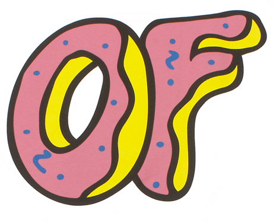
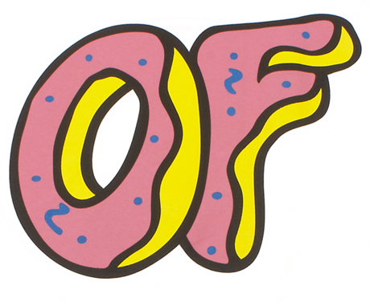

초기 생애와 음악적 시작
타일러는 캘리포니아에서 태어나 청소년 시절부터 음악 제작과 프로듀싱에 관심을 가지기 시작했다. 2007년, 친구들과 함께 대안 힙합 그룹 Odd Future를 결성하며 언더그라운드 씬에 큰 파장을 일으켰다.
타일러 더 크리에이터의 음악 여정과 그가 만든 세계관의 핵심 이야기
타일러는 캘리포니아에서 태어나 청소년 시절부터 음악 제작과 프로듀싱에 관심을 가지기 시작했다. 2007년, 친구들과 함께 대안 힙합 그룹 Odd Future를 결성하며 언더그라운드 씬에 큰 파장을 일으켰다.
첫 솔로 앨범 'GOBLIN'을 발표하며 자신만의 독특하고 충격적인 페르소나와 음악적 세계를 대중에게 각인시켰다. 논란의 중심에 서기도 했지만, 그의 천재성은 부인할 수 없었다.

'FLOWER BOY' 앨범을 통해 이전과는 다른 서정적이고 감성적인 음악을 선보이며 음악적 스펙트럼을 넓혔다. 평단의 극찬을 받으며 타일러가 단순한 문제아가 아닌, 진정한 아티스트임을 증명했다.

앨범 'IGOR'는 음악, 비주얼, 스토리텔링이 완벽하게 결합된 하나의 예술 작품으로 평가받았다. 이 앨범으로 그는 그래미 어워드 '최우수 랩 앨범'을 수상하며, 아티스트로서의 입지를 확고히 했다.